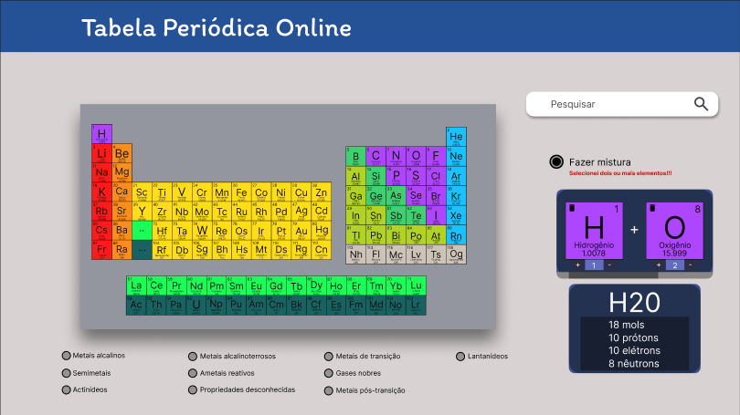
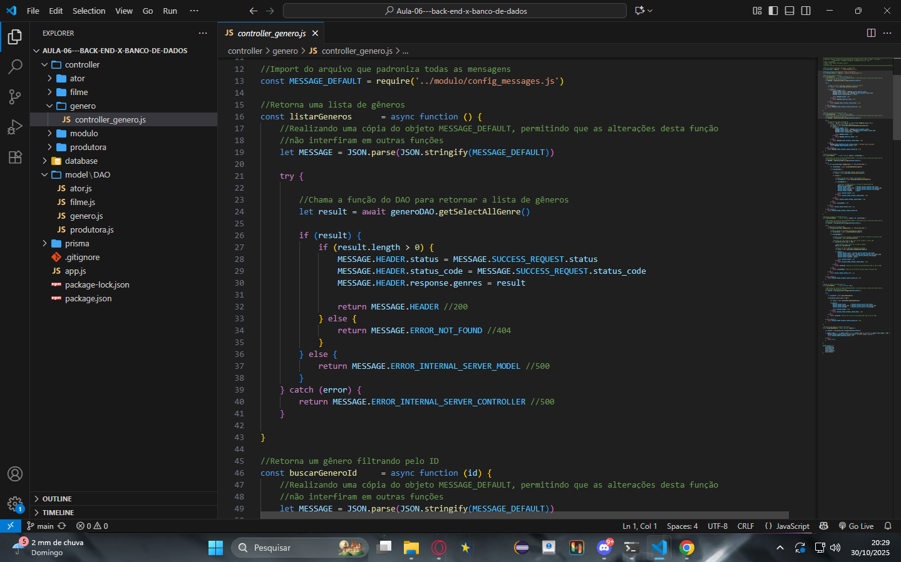
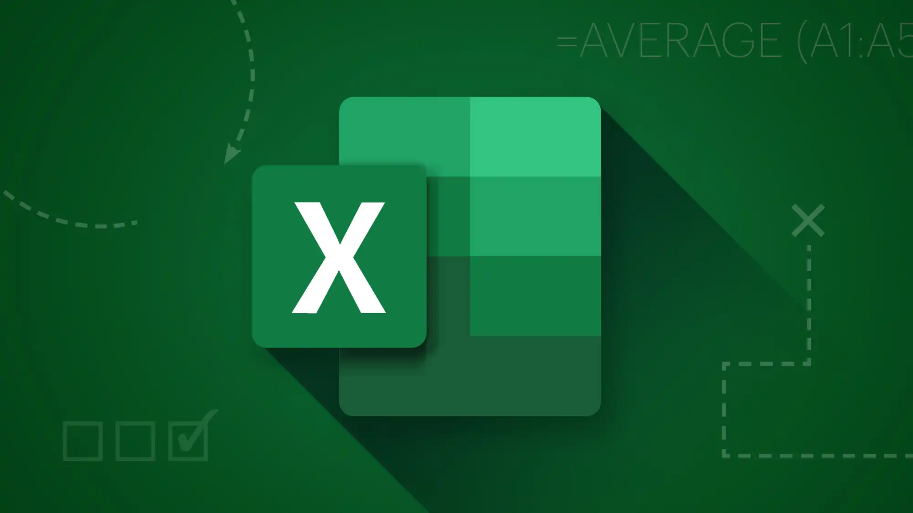

Portfólio
Prazer, Eu sou o Vitor
Futuro Grande Programador!
Seja bem vindo ao meu portifólio de Tecnologia da Informação (TI)!
Atualmente estou cursando Desenvolvimento de Sistemas no Senai de Jandira em São Paulo. Nessa página eu demonstro minhas habilidades de resolver problemas de negócios utilizando conceitos e ferramentas da Tecnologia da Informação através de projetos com dados públicos. Você encontrará minhas experiências profissionais, habilidades, ferramentas e conceitos envolvendo a ciência de dados.
Desenvolvimento Web Front-End
- Criação e estruturação de páginas web com HTML5.
- Estilização e design visual com CSS3 (flexbox, layout responsivo, personalização de cores, fontes e imagens).
- Interatividade e lógica de interface com JavaScript puro (ES6) manipulação do DOM, eventos e lógica de navegação.
- Integração simples entre front-end e back-end.
- Estruturação de diretórios e assets em projetos web.
- Uso de GitHub Pages para hospedar sites e portfólios.
Programação em Java
- Conhecimento de POO (Programação Orientada a Objetos): classes, herança, encapsulamento e polimorfismo.
- Desenvolvimento de sistemas de cadastro (como “clinica”) e outros projetos didáticos
- Organização de pacotes, métodos e variáveis seguindo boas práticas.
- Uso de IDE (provavelmente NetBeans, Eclipse ou IntelliJ).
- Manipulação de dados, estruturas condicionais e laços de repetição.
- Preparação para frameworks Java (Spring Boot, JavaFX etc.).
Linguagem JavaScript
- Manipulação do DOM (document structure).
- Criação de eventos (click, mouse, teclado).
- Animações e interações simples.
- Uso de funções, arrays e objetos.
- Noções de APIs e JSON (caso já tenha experimentado integração).
- Base sólida para avançar em frameworks modernos (React, Node.js, etc.).
Modelagem e Administração de Banco de Dados
- Criação e modelagem de bancos relacionais (MySQL).
- Tabelas, chaves primárias e estrangeiras.
- Comandos CRUD (CREATE, SELECT, UPDATE, DELETE).
- Uso de JOINs e Views para cruzar dados.
- Consultas com filtros, ordenação e contagem (WHERE, ORDER BY, COUNT).
- Experiência com modelos conceituais e lógicos (Draw.io).

Criação de uma Tabela Periódica Interativa
Este projeto acadêmico foi desenvolvido utilizando Linguagem de Marcação e JavaScript para realizar requisições a uma API pública. A criação teve como foco principal o aprendizado prático de como consumir APIs desse tipo.
Ferramentas Utilizadas:
- Git, Github
- JavaScript
- HTML e CSS
- UI/UX no Figma

Criação de um API integrada com Banco de Dados
Este projeto tem como tema uma locadora de filmes, permitindo o gerenciamento de dados de filmes, diretores, atores, gêneros e produtoras. A API segue o padrão RESTful e utiliza todas as operações CRUD, com validações na controller e integração com um banco de dados relacional.
Ferramentas Utilizadas:
- JavaScript
- Express.js
- Git, Github
- MySQL Workbench
- Postman
Certificados
Certificação em Segurança do Trabalho
Este curso fundamental capacita você a identificar, avaliar e prevenir riscos no ambiente de trabalho. O foco é garantir o cumprimento das normas de segurança (NRs) e o uso correto de EPIs, promovendo ativamente um ambiente seguro para todos os colaboradores.
CertificadoÉtica na Inteligência Artificial
Este curso capacita você a garantir que os sistemas de Inteligência Artificial sejam justos, transparentes e seguros. O foco está em identificar e corrigir vieses, proteger a privacidade dos dados e aplicar princípios éticos para um desenvolvimento de IA responsável.
Certificado
